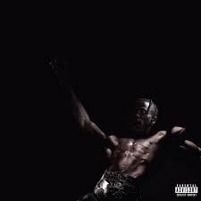
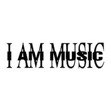
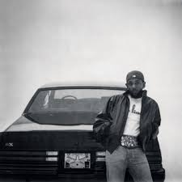
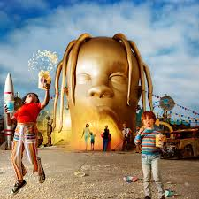
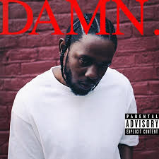
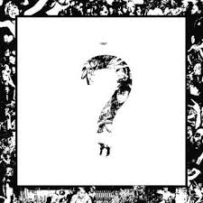
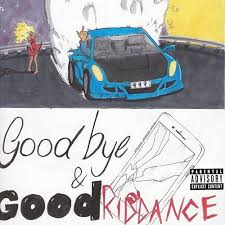

Utopia
"Utopia" foi acompanhado pelo filme "Circus Maximus", uma experiência visual lançada junto ao álbum, reforçando sua estética grandiosa. Comercialmente, foi um enorme sucesso, estreando no topo da Billboard 200, com 496.000 unidades vendidas na primeira semana, e dominando paradas globais.

MUSIC
"Music" recebeu críticas geralmente positivas, sendo elogiado pela produção e pela performance vocal de Carti, embora alguns apontassem inconsistências e a longa duração como pontos negativos. O álbum estreou em primeiro lugar na Billboard 200, vendendo 298.000 unidades equivalentes na primeira semana, tornando-se o segundo número um de Carti.

GNX
"GNX" conta com participações de SZA, Roddy Ricch, AzChike, Hitta J3, YoungThreat e Peysoh, além de uma produção liderada por Jack Antonoff, Sounwave e Mustard. O álbum foi impulsionado por quatro singles de sucesso, incluindo "Squabble Up" e "Luther", que alcançaram o topo da Billboard Hot 100. Comercialmente, estreou em primeiro lugar na Billboard 200, tornando-se o quinto álbum número um de Lamar.
"Mergulhe na essência sonora destes álbums únicos, onde cada faixa é uma jornada emocional. Descubra letras profundas, arranjos envolventes e uma sonoridade que transcende estilos. Prepare-se para sentir a música de um jeito diferente!"

ASTROWORD
Astroworld é o terceiro álbum de estúdio do rapper Travis Scott, lançado em 3 de agosto de 20182. O nome do álbum faz referência ao antigo parque de diversões Six Flags AstroWorld, localizado em Houston, Texas, que foi fechado em 2005. Travis Scott queria que o álbum transmitisse a sensação de perder um parque de diversões, criando uma experiência sonora imersiva e psicodélica.

DAMN.
DAMN. é o quarto álbum de estúdio do rapper Kendrick Lamar, lançado em 14 de abril de 2017. O disco apresenta uma fusão de hip-hop consciente, trap e R&B contemporâneo, explorando temas como identidade, espiritualidade e desafios sociais. O álbum recebeu o Grammy de Melhor Álbum de Rap e, em um feito histórico, Kendrick Lamar se tornou o primeiro artista fora dos gêneros clássico e jazz a ganhar o Prêmio Pulitzer de Música.

Luv Is Rage 2
Luv Is Rage 2 é o álbum de estreia do rapper Lil Uzi Vert, lançado em 25 de agosto de 2017. O disco é uma continuação do mixtape Luv Is Rage (2015) e apresenta uma sonoridade emo rap, misturando vocais melódicos, Auto-Tune e batidas energéticas. Luv Is Rage 2 estreou em primeiro lugar na Billboard 200, vendendo 135.000 unidades na primeira semana, e foi certificado cinco vezes platina pela RIAA. O álbum consolidou Lil Uzi Vert como um dos principais nomes do hip-hop contemporâneo.
"Explore a fusão perfeita entre batidas envolventes e letras impactantes. Cada álbum é uma experiência única, onde a música se torna uma extensão da sua alma. Deixe-se levar por melodias que ecoam na sua mente e sentimentos que tocam o seu coração."

?
? é o segundo álbum de estúdio do rapper XXXTentacion, lançado em 16 de março de 2018. Este foi o último álbum lançado antes de sua morte, três meses depois1. O disco apresenta uma mistura de emo rap, trap, rock alternativo e cloud rap, refletindo a versatilidade artística de X. A sonoridade do álbum varia entre momentos introspectivos e explosivos, com letras que exploram temas como dor, amor, solidão e autoconhecimento. A abordagem experimental e emocional de XXXTentacion fez de ? um dos álbuns mais impactantes de sua carreira.

Goodbye & Good Riddance
Goodbye & Good Riddance é o álbum de estreia do rapper Juice WRLD, lançado em 23 de maio de 2018. O disco é um marco do emo rap, combinando letras melancólicas com batidas atmosféricas e melodias envolventes. O álbum explora temas como coração partido, vícios e autodestruição, refletindo as emoções intensas de Juice WRLD. Faixas como Lucid Dreams, All Girls Are the Same e Lean wit Me se tornaram grandes sucessos, com Lucid Dreams alcançando o segundo lugar na Billboard Hot 100.

Views
Views é o quarto álbum de estúdio do rapper Drake, lançado em 29 de abril de 2016. O disco explora influências da música das Índias Ocidentais e da África Ocidental, marcando a primeira incursão completa de Drake no dancehall jamaicano, além de incorporar R&B, trap, Afrobeat, UK funky e pop. Views estreou em primeiro lugar na Billboard 200, vendendo 1,04 milhão de unidades na primeira semana, incluindo 852.000 cópias físicas, e acumulando mais de 245 milhões de streams.
"Mais do que um álbum, uma experiência completa. Navegue pelas faixas, explore arte exclusiva e descubra os bastidores da criação. Deixe-se levar pela melodia e pelas histórias que deram vida a cada nota!